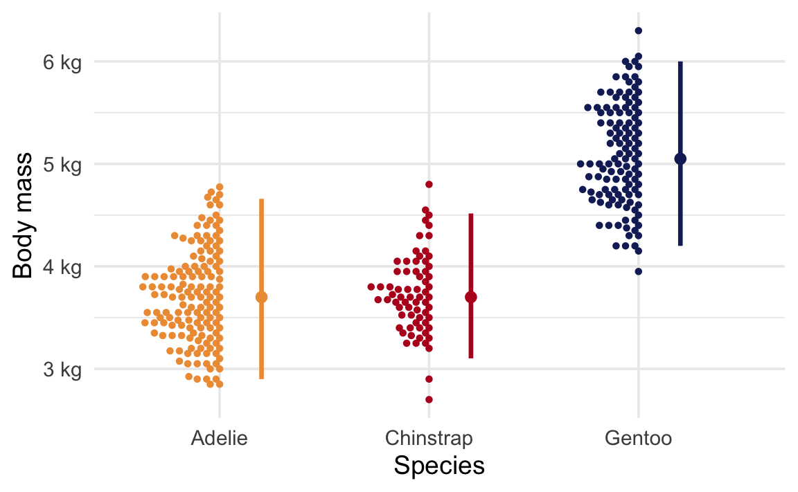
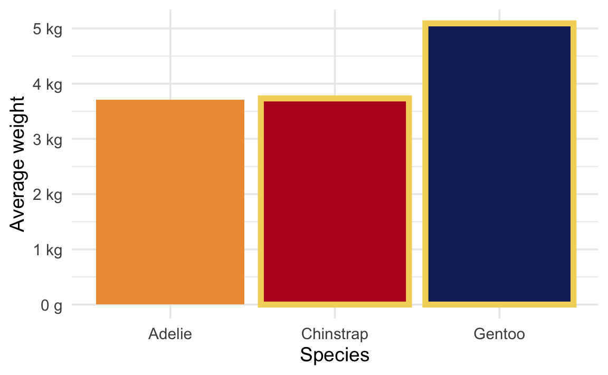
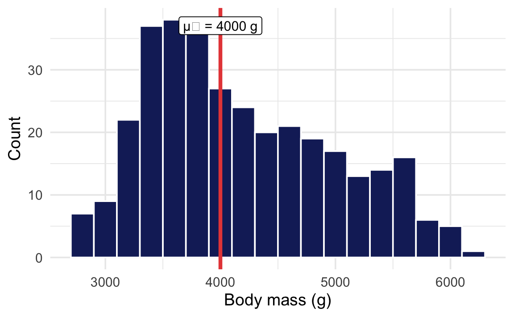

So far all the examples on this site calculated p-values through simulation—shuffling and resampling to build null worlds.
In real life, you won’t actually do this!
Regular statistical tests like R’s t.test(), prop.test(), and lm() skip the simulation and instead use known theoretical distributions (like the t, F, and \(\chi^2\) distributions) to approximate null worlds and calculate p-values. This theoretical, mathematical p-value is what you see in regular statistical output.
Even though they’re not based on simulations, the intuition is the same: a p-value is still the probability of seeing a \(\delta\) at least that large in a world where there is no difference.
Code
library(tidyverse)library(scales)library(ggdist)library(ggbeeswarm)library(parameters)library(tinytable)penguins <- penguins |>drop_na(sex)theme_set(theme_minimal(base_size =14))# From MoMAColors::moma.colors("OKeeffe")clrs <-c("#f3d567","#ee9b43","#e74b47","#b80422","#172767","#19798b")
Difference in means
This is the same thing the difference in means example calculates through simulation—just computed with a formula instead.
Here’s the average body mass across species:
Code
avg_weight |>tt()
species
avg_weight
Adelie
3706.164
Chinstrap
3733.088
Gentoo
5092.437
Code
ggplot(penguins, aes(x = species, y = body_mass, color = species)) +geom_beeswarm(side =-1, size =1, cex =1.5) +stat_pointinterval(.width =0.95, position =position_nudge(x =0.2)) +scale_y_continuous(labels =label_number(scale_cut =cut_si("g"))) +scale_color_manual(values =c(clrs[2], clrs[4], clrs[5]), guide ="none") +labs(x ="Species", y ="Body mass")

We can ask a couple questions here about the differences in means.
Is there a difference in body mass between Chinstrap and Gentoo penguins?
We’re looking at the difference between these two values:
avg_weight |>mutate(highlight = species %in%c("Chinstrap", "Gentoo")) |>ggplot(aes(x = species, y = avg_weight, fill = species)) +geom_col(aes(color = highlight), linewidth =2) +scale_y_continuous(labels =label_number(scale_cut =cut_si("g"))) +scale_color_manual(values =c(NA, clrs[1]), guide ="none") +scale_fill_manual(values =c(clrs[2], clrs[4], clrs[5]), guide ="none") +labs(x ="Species", y ="Average weight")

Code
t.test( body_mass ~ species,data =filter(penguins, species %in%c("Chinstrap", "Gentoo")))
Welch Two Sample t-test
data: body_mass by species
t = -20.765, df = 169.62, p-value < 2.2e-16
alternative hypothesis: true difference in means between group Chinstrap and group Gentoo is not equal to 0
95 percent confidence interval:
-1488.578 -1230.120
sample estimates:
mean in group Chinstrap mean in group Gentoo
3733.088 5092.437
Parameter
Difference (SE)
p
Group
species = Chinstrap
species = Gentoo
Alternative hypothesis: true difference in means between group Chinstrap and group Gentoo is not equal to 0
body_mass
-1359.35
<0.001
species
3733.09
5092.44
The p-value here is essentially zero (p < 2.2 × 10−16). In a world where Chinstrap and Gentoo penguins had the same average body mass, it would be virtually impossible to see a difference this large.
Is there a difference in body mass between Adelie and Chinstrap penguins?
We’re looking at the difference between these two values:
avg_weight |>mutate(highlight = species %in%c("Chinstrap", "Adelie")) |>ggplot(aes(x = species, y = avg_weight, fill = species)) +geom_col(aes(color = highlight), linewidth =2) +scale_y_continuous(labels =label_number(scale_cut =cut_si("g"))) +scale_color_manual(values =c(NA, clrs[1]), guide ="none") +scale_fill_manual(values =c(clrs[2], clrs[4], clrs[5]), guide ="none") +labs(x ="Species", y ="Average weight")
Code
t.test( body_mass ~ species,data =filter(penguins, species %in%c("Adelie", "Chinstrap")))
Welch Two Sample t-test
data: body_mass by species
t = -0.44793, df = 154.03, p-value = 0.6548
alternative hypothesis: true difference in means between group Adelie and group Chinstrap is not equal to 0
95 percent confidence interval:
-145.66494 91.81724
sample estimates:
mean in group Adelie mean in group Chinstrap
3706.164 3733.088
Parameter
Difference (SE)
p
Group
species = Adelie
species = Chinstrap
Alternative hypothesis: true difference in means between group Adelie and group Chinstrap is not equal to 0
body_mass
-26.92
0.655
species
3706.16
3733.09
One-sample mean
This is the theoretical version of the one-sample mean simulation, where we bootstrap a null world centered at a hypothesized value.
Is the average body mass of all penguins in the dataset different from 4000 g?
Code
mass_summary |>tt()
n
Sample mean
μ₀
333
4207.057
4000
Code
ggplot(penguins, aes(x = body_mass)) +geom_histogram(binwidth =200,fill = clrs[5], color ="white" ) +geom_vline(xintercept =4000,color = clrs[3], linewidth =1.5 ) +annotate("label",x =4000, y =Inf, vjust =1.5,label ="μ₀ = 4000 g", size =4 ) +labs(x ="Body mass (g)", y ="Count")

Code
t.test(penguins$body_mass, mu =4000)
One Sample t-test
data: penguins$body_mass
t = 4.6925, df = 332, p-value = 3.952e-06
alternative hypothesis: true mean is not equal to 4000
95 percent confidence interval:
4120.256 4293.858
sample estimates:
mean of x
4207.057
Parameter
Mean (SE)
p
mu
Alternative hypothesis: true mean is not equal to 4000
body_mass
4207.06
<0.001
4000
The p-value tells us the probability of seeing a sample mean this far from 4000 g in a world where the true average really is 4000 g. The small p-value gives us evidence that the true mean is not 4000 g.
2-sample test for equality of proportions with continuity correction
data: penguins_prop$n_female out of penguins_prop$n
X-squared = 0.0065013, df = 1, p-value = 0.9357
alternative hypothesis: two.sided
95 percent confidence interval:
-0.1160296 0.1412397
sample estimates:
prop 1 prop 2
0.500000 0.487395
Difference (SE)
p
Proportion
Alternative hypothesis: two.sided
1.26%
0.936
50.00% / 48.74%
This time the p-value is large—both species have roughly the same proportion of females. In a world where the two species truly had the same proportion of females, it would be completely unsurprising to see a difference this small. There is not enough evidence to say the proportions are different; the result is not statistically significant.
Not every test produces a tiny p-value! A large p-value doesn’t mean there’s no difference—just that the data don’t provide enough evidence to distinguish a real difference from random variation.
Regression
This is the theoretical version of the regression slope simulation, where we shuffle the outcome to build a null world where the slope is zero.
Does flipper length predict body mass?
Code
reg_summary |>tt()
n
Cor(x, y)
333
0.8729789
Code
ggplot( penguins,aes(x = flipper_len, y = body_mass)) +geom_point(color = clrs[5], alpha =0.5) +geom_smooth(method ="lm",color = clrs[3], se =FALSE ) +labs(x ="Flipper length (mm)",y ="Body mass (g)" )
Call:
lm(formula = body_mass ~ flipper_len, data = penguins)
Residuals:
Min 1Q Median 3Q Max
-1057.33 -259.79 -12.24 242.97 1293.89
Coefficients:
Estimate Std. Error t value Pr(>|t|)
(Intercept) -5872.09 310.29 -18.93 <2e-16 ***
flipper_len 50.15 1.54 32.56 <2e-16 ***
---
Signif. codes: 0 '***' 0.001 '**' 0.01 '*' 0.05 '.' 0.1 ' ' 1
Residual standard error: 393.3 on 331 degrees of freedom
Multiple R-squared: 0.7621, Adjusted R-squared: 0.7614
F-statistic: 1060 on 1 and 331 DF, p-value: < 2.2e-16
Parameter
Coefficient (SE)
p
(Intercept)
-5872.09 (310.29)
<0.001
flipper len
50.15 ( 1.54)
<0.001
In regression output, each coefficient has its own p-value. The p-value for flipper_len tests whether the slope is different from zero—in a world where flipper length had no relationship with body mass (a slope of zero), it would be essentially impossible to see a slope this steep (p < 2.2 × 10−16).